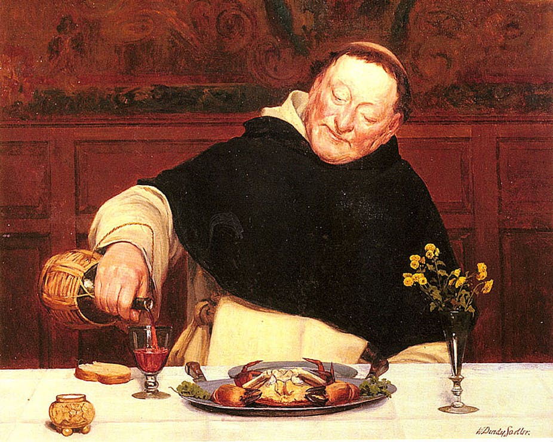

Om Brygning

Der skal bruges:
- Malt
- En husholder til at lave brødet
- Vand til brødet og husholderen
Fremgangsmåde
-
Mal først dit mel enten om sommeren eller vinteren afhængigt af smagen
og træd på dem i et vandkar inden
OBS: Husk at have rene fødder og negle!
- Ælt med surdej for endnu bedre smag
- Lad den hæve
- Når den er hævet, så arbejd med brødet Jo mere arbejde brødet får, desto bedre bliver brødet
- Krydr brødet med fx salt, koriander, fennikkelfrø
Tilbage